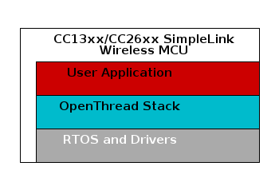
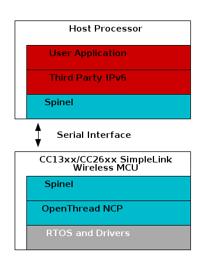

TI-OpenThread Overview¶
This section describes the architecture of a TI-OpenThread application at a high level and the architecture of the OpenThread stack itself. Also, the different system configurations which are supported by TI-OpenThread are described.
Application Architecture¶
A TI-OpenThread application is split into two major contexts: the user application and the OpenThread stack. Both the user application and the OpenThread stack executes in separate RTOS tasks, and the user application consists of one or more tasks. Figure 20. provides an architectural overview of a generic TI-OpenThread application.
{kind=link}
The OpenThread stack task instantiates an OpenThread stack instance and does basic setup of the stack primitives. The OpenThread stack manages a queue of tasks to be run called tasklets. The primary objective of the stack task is to process these queued tasklets. The stack task also processes the TI-OpenThread platform-specific drivers, which is the adaptation layer between the OpenThread stack and TI Drivers API Reference.
The OpenThread stack is designed and developed for a single-threaded environment; this was done so by the OpenThread developers for the sake of simplicity and ease of testing. Therefore, the OpenThread stack assumes there is implicit mutually exclusive access to its data structures. However, in a multi-threaded environment such as TI-RTOS7, this assumption doesn’t hold anymore. That is why a recursive mutex has been put in place in order to ensure coherent access to the OpenThread APIs by both the user application tasks and the OpenThread stack task.
System Stack¶
Besides the user application and the OpenThread stack contexts, there is one
other context to consider. As described in TI-RTOS7, each task has its own runtime stack for
context switching. However, in TI-RTOS7 a separate runtime stack, the system
stack, is used to run main(), HWIs, and SWIs.
The system stack is allocated at the high end of the RAM memory region, and the size of the stack is configured in the application’s linker file.
OpenThread Stack Architecture¶
The OpenThread stack is an open-source implementation of the Thread specification, and is implemented in C++ with C-bindings for the OpenThread API. The implementation is written in portable C++03 and C99. OpenThread is a platform-agnostic stack, and makes no assumptions on the underlying platform. That means OpenThread can run in both bare-metal environments and on fully fledged OSes.
OpenThread is a monolithic stack designed and developed for a single-threaded environment. The stack dispatches work into lightweight tasks called tasklets, which are segments of code written in a non-blocking fashion. The stack manages a queue of pending tasklets to be run, which are processed by the underlying stack task context.
Please refer to the OpenThread Platforms section for more information about the OpenThread platform in general, or refer to the OpenThread GitHub for the full source code.
Figure 21. OpenThread stack architecture. Source: https://openthread.io/platforms¶
Platform Configurations¶
TI-OpenThread supports both system-on-chip (SoC) and network co-processor (NCP) architectural configurations.
Single-Chip, Thread-Only (SoC)¶
Both the application and the OpenThread stack run on the CC13xx or CC26xx as a true single-chip solution. This configuration is the most cost-effective solution and provides the best low-power performance, and is therefore most commonly used for end devices.
{kind=link}
Network Co-Processor (NCP)¶
The OpenThread stack runs on the CC13xx or CC26xx while the application is executed on a separate external host processor. The host processor communicates with the NCP device via a serial interface, such as UART or SPI, over the Spinel Protocol.
The NCP configuration is useful for applications that must add wireless connectivity or peripheral applications, which execute on a host processor without the requirement to implement the complexities associated with a wireless networking protocol. In these cases, the application can be developed externally on a host processor while running Thread on the NCP device, which provides ease of development and quickly adds Thread support and wireless connectivity to existing products.
For more information, refer to NCP Interface.
{kind=link}